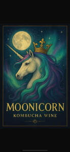

Trade Mark Journal No.2025/051 19 December 2025
UK00004291648 9 November 2025 (1,6,21,25,29,30,32,33,35,43)

- Class 1
- Chemicals for fermenting wine; Fermenting wine (Chemicals used in -); Wine (Chemicals used in fermenting -); Chemicals used in fermenting wine.
- Class 6
- Cans of metal for alcoholic beverages; Wine casks of metal.
- Class 21
- Drinking bottles; Bottles; Demijohns; Coolers for wine; Wine coolers; Water bottles; Industrial packaging containers of glass.
- Class 25
- Clothing; Knitwear [clothing]; Jackets [clothing]; Ready-to-wear clothing; Woolen clothing; Linen clothing; Headbands [clothing]; Headbands for clothing; Aprons [clothing]; Jerseys [clothing]; Parts of clothing, footwear and headgear; Hoods [clothing]; Embroidered clothing; Waterproof clothing; Casual clothing; Visors [clothing]; Jackets being sports clothing; Jackets (Stuff -) [clothing]; Stuff jackets [clothing]; Bottoms [clothing]; Clothing for leisure wear; Ready-made clothing; Infant clothing; Woven clothing; Drawers [clothing]; Drawers as clothing; Clothing for sports; Sports clothing; Athletic clothing; Clothing for children; Tops [clothing]; Weatherproof clothing.
- Class 29
- Lactic acid bacteria drinks; Fermented fruits.
- Class 30
- Kombucha; Fermented tea; Yeast for brewing; Ginger tea; Rooibos tea; Tea-based beverages with fruit flavoring; Oolong tea [Chinese tea]; Tea-based beverages; Beverages (Tea-based -); Herb tea [infusions]; Tea beverages; Herbal tea; Herbal teas [infusions]; Tea beverages (Non-medicated -); Tea for infusions; Glucose syrup for use as a fermenting aid for food; Herbal teas; Ginseng tea; Chai tea; Non-medicinal herbal tea; Fruit teas; Yeast for use as an ingredient in foods; Iced teas; Chamomile tea; Iced tea (Non-medicated -); Beverages made of tea; Packaged tea [other than for medicinal use]; Fruit flavoured tea [other than medicinal]; Herbal tea [other than for medicinal use]; Carbonated and non-carbonated tea based beverages; Iced tea; Tea (Iced -); Tea.
- Class 32
- Non-alcoholic wine; Non-alcoholic wines; Alcohol free wine; Non alcoholic aperitifs; Non-alcoholic grape juice beverages; Non-alcoholic fruit vinegar beverages; Non-alcoholic fruit drinks; Fruit beverages (non-alcoholic); Non-alcoholic fruit cocktails; Non-alcoholic drinks; Non-alcoholic sparkling fruit juice drinks; Non-alcoholic beverages; Beverages (Non-alcoholic -); Non-alcoholic beverages flavoured with coffee; Aperitifs, non-alcoholic; Non-alcoholic beverages flavoured with tea; Non-alcoholic beverages flavored with coffee; Fruit juice beverages (Non-alcoholic -); Non-alcoholic fruit juice beverages; Non-alcoholic beers; Non-alcoholic beverages flavored with tea; Non-alcoholic soda beverages flavoured with tea; Kvass [non-alcoholic beverage]; Non-alcoholic dried fruit beverages; Kvass [non-alcoholic beverages]; Non-alcoholic beverages with tea flavor; Low alcohol beer; Non-alcoholic vegetable juice drinks; Cordials [non-alcoholic]; Non-alcoholic cordials; Grape juice beverages; Carbonated non-alcoholic drinks; Root beers, non-alcoholic beverages; Non-alcoholic carbonated beverages; Non-alcoholic honey-based beverages; Honey-based beverages (Non-alcoholic -).
- Class 33
- Alcoholic wines; Wine; Alcoholic aperitifs; Alcoholic cocktails; Alcoholic beverages of fruit; Alcoholic fruit beverages; Alcoholic fruit cocktail drinks; Alcoholic beverages, except beer; Alcoholic beverages (except beer); Beverages (Alcoholic -), except beer; Grape wine; Alcoholic seltzers; Alcoholic coffee-based beverage; Sugarcane-based alcoholic beverages; Alcoholic tea-based beverage; Baijiu [Chinese distilled alcoholic beverage]; Fruit wine; Pre-mixed alcoholic beverages; Alcoholic carbonated beverages, except beer; Beverages containing wine [spritzers]; Sparkling grape wine; Pre-mixed alcoholic beverages, other than beer-based; Wine coolers [drinks]; Alcoholic beverages (except beers); Alcoholic beverages [except beers]; Alcoholic beverages except beers; Mulled wine; Alcoholic bitters; Grain-based distilled alcoholic beverages; Alcoholic energy drinks; Fruit (Alcoholic beverages containing -); Alcoholic beverages containing fruit; Sparkling wine; Alcoholic cocktails containing milk; Sparkling fruit wine; Low alcoholic drinks; Strawberry wine; Wine-based beverages; Sweet wine; Wine-based drinks; Flavoured brewed alcoholic malt beverages, except beers; Flavored brewed alcoholic malt beverages, except beers; Alcoholic jellies; Prepared alcoholic cocktails; Rice wine; Blackberry wine; Aperitif wines; Low-alcoholic wine; Prepared wine cocktails; Wine punch; White wine; Alcoholic cocktail mixes; Red wine; Alcoholic fruit extracts; Fruit extracts, alcoholic; Alcoholic essences; Cooking wine; Wines; Mulled wines; Alcoholic cocktails in the form of chilled gelatins; Alcoholic extracts; Dessert wines; Still wine.
- Class 35
- Retail services in relation to alcoholic beverages (except beer); Wholesale services in relation to alcoholic beverages (except beer); Retail services connected with the sale of clothing and clothing accessories.
- Class 43
- Serving of alcoholic beverages; Wine bars; Wine tasting services (provision of beverages).
Frazer Auld
Celia Auld